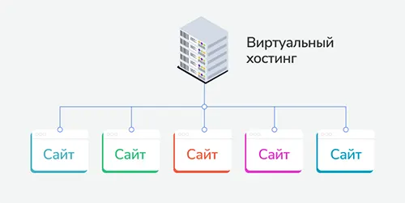

Что такое хостинг и как выбрать его тип в зависимости от сайта
Вы узнаете, что такое хостинг сайтов и как он работает, какие преимущества и недостатки каждого из типов хостинга. А главное — сможете определиться, какой хостинг выбрать под свой проект. Ведь от этого во многом зависит эффективность технической работы сайта, удовлетворенность посетителей и SEO-продвижение.
Содержание:
- Что такое хостинг сайтов
- Принципы работы хостинга
- Зачем нужен хостинг
- Отличие хостинга от домена
- Типы хостинга
- Как хостинг влияет на продвижение
- Какой хостинг выбрать
- Можно ли поменять тип хостинга
Что такое хостинг сайтов
Хостинг — это аренда ресурсов на сервере провайдера для размещения пользовательской информации.
Термин происходит от английского host, что означает «хозяин, принимающий гостей». Хостинг-провайдер предоставляет свои дисковые площади и вычислительные мощности в аренду пользователям. Его услуги сравнимы с цифровым отелем, в котором сдаются номера разного размера на срок удобный клиенту.
Принципы работы хостинга
Для начала вспомним, что такое сайт. Это папка с файлами, в которых содержится весь контент — сверстанные страницы, фотографии, тексты, видео. Если ввести в строку поиска адрес (домен), браузер направит на основную страницу, к которой привязаны все остальные файлы.
Чтобы читатели имели круглосуточный доступ к информации на сайте, веб-ресурс должен размещаться на мощном компьютере с бесперебойным доступом к сети — сервере.
Клиент получает в свое распоряжение часть памяти на диске и нужные вычислительные мощности. Это может быть как небольшой «кусочек» сервера, так и целая машина.
Зачем нужен хостинг
На хостинге находятся сайты, блоги, форумы, интернет-магазины на любую тематику, кроме запрещенной законом и правилами провайдера, прописанными в публичной оферте. В основном к «запрещенке» относят порнографию, продажу наркотических средств, распространение пиратского контента и тому подобное.
На крупных видах хостинга — таких как VPS или выделенный сервер — не только размещают сайты, но также хранят файловые архивы и работают с ресурсоемким ПО, которому не хватает мощности обычного компьютера, создают почтовые и другие сервисы.
Отличие хостинга от домена
Незнакомые с этими терминами люди иногда путают их. Это и понятно, ведь хостинг и домен работают в связке: сайт существует в сети только при наличии обоих компонентов. И все же, это разные понятия.
Напомним, хостинг — это серверные мощности для хранения и обработки файлов сайта. Чаще всего услуги хостинга берут на год, но клиенты могут оплачивать сервис как ежемесячно, так и «купить абонемент» сразу на несколько лет.
Домен — это адрес сайта в интернете, например, sendpulse.ua. Набирая комбинацию латинских букв и точек, вы сообщаете браузеру, на каком сервере искать сайт. Домен арендуют сроком от года до десяти лет.
Типы хостинга
От типа хостинга зависит количество ресурсов: объем жестких дисков и оперативной памяти, а также мощность и количество ядер процессора. При этом каждый тип хостинга физически размещается на сервере.
Виртуальный хостинг
Виртуальный хостинг — это самый простой и недорогой способ разместить сайт в сети.
Еще одно название такого хостинга — shared, что означает общий. Термин отражает принцип работы такого хостинга: клиенты пользуются ресурсами процессора и оперативной памяти совместно. При этом каждый получает отдельный аккаунт с клиентской панелью, небольшим участком памяти для хранения файлов и несколькими процентами вычислительной мощности для их обработки.
Провайдеры предлагают хостинговые тарифы для разного количества сайтов — от одного до неограниченного количества. Чем больше сайтов, тем дешевле обойдется хостинг для каждого.
Достоинства
- Доступная цена. Это самый дешевый вид хостинга — 10-80 долларов в год.
- Простота в управлении. Клиент получает интуитивно понятную панель с необходимым набором инструментов. Благодаря этому можно быстро научиться управлять сайтом, даже если никогда этого не делал.
- Все настройки и технические работы выполняет провайдер. Клиент администрирует только свой сайт, не вникая в подробности функционирования хостинга.
Недостатки
- Мало ресурсов. Обычно клиент получает несколько гигабайтов памяти для размещения сайта и несколько процентов вычислительной мощности. Сайту-визитке этого хватит, но крупный интернет-магазин уже потребует намного больше места.
- Невозможность установить свое ПО. Виртуальный хостинг имеет собственный набор инструментов, который определяет провайдер. Комплект в основном стандартный, но может немного отличаться в зависимости от поставщика хостинга. Как правило, это FTP-менеджер, MySQL для управления базами данных, инструменты для управления PHP-версиями, создания почтовых ящиков, резервного копирования, установки антивирусов, конструктор сайтов и другие компоненты. Обычно клиентам хватает базового пакета для работы, но установить какую-то специализированную программу, увы, не удастся.
- Влияние соседних аккаунтов. Провайдеры делают все зависящее от них, чтобы каждый клиент работал в отведенных ему рамках. Но сама архитектура общего вида хостинга имеет свои особенности. Так, повышение нагрузки на один сайт провоцирует замедление работы всего сервера, а вместе с ним — всех сайтов, размещенных на нем.
- Размещать можно только работающие сайты. Провайдеры запрещают использовать виртуальный хостинг для хранения файлов, резервных копий и любых других данных, не используемых сайтом.
VPS-хостинг
VPS (virtual private server — виртуальный приватный сервер) — это выделенный участок реального сервера, имитирующий автономный компьютер. С помощью виртуализации физическая машина делится на несколько частей, каждая из которых работает как отдельный сервер. На одном очень мощном компьютере может размещаться несколько десятков виртуальных серверов.
Виртуализация — способ разделения одного реального компьютера на несколько виртуальных. Каждая виртуальная машина работает автономно, имеет свою собственную операционную систему и использует только выделенную для нее часть оборудования сервера. Технология реализуется с помощью специального программного обеспечения.
Чем VPS отличается от виртуального хостинга? Для их реализации используются разные технологии. Если привести простую аналогию, то виртуальный хостинг — это один общий компьютер, на котором хранится много папок, защищенных паролем. У каждого пользователя своя папка, он знает пароль только от нее и может работать исключительно в ней. VPS — это свой собственный отдельный компьютер, но не настоящий, а виртуальный — размещенный внутри реального физического сервера рядом с другими виртуальными компьютерами.
На виртуальном сервере можно не только размещать сайты, но и хранить массивные рабочие файлы, устанавливать ресурсоемкое ПО, организовывать центры управления для различных сервисов.
У виртуального сервера в среднем больше дискового пространства и вычислительной мощности, поэтому на него часто переходят клиенты, проекты которых уже не помещаются на виртуальном хостинге.
Например, объем выделяемой памяти на жестком диске для клиентов виртуального хостинга колеблется в пределах от 1 до 50 гигабайт, а на VPS — от 35 до 400 гигабайт.
Но это влечет за собой и дополнительные расходы — хороший бюджетный сервер стоит от 70 долларов в год, стоимость более мощных комплектаций может доходить до 350 долларов в год и выше.
Достоинства
- Больше свободы в управлении. Можно устанавливать нужное ПО, производить индивидуальные настройки под проект. Эти возможности не безграничны, но здесь — в отличие от виртуального хостинга — они есть.
- Больше автономности. На ваш хостинг не влияют нагрузки соседей — вы работаете так, будто это отдельный сервер.
- Хороший выбор для небольших компаний. Мощный и быстрый хостинг, доступный по цене для малого и среднего бизнеса.
Недостатки
- Более высокая цена. По сравнению с виртуальным хостингом стоит значительно дороже.
- Сложнее в управлении — нужно знать, как администрировать сервер. Обычно провайдер предлагает бесплатно установить операционную систему и панель управления, но дальше все придется делать своими силами. Впрочем, если самостоятельно управлять сервером вы не можете или не хотите, можете заказать дополнительно платную услугу у того же провайдера.
- Невозможность установить уникальное ПО. Средства виртуализации, с помощью которых работает VPS, накладывают свои ограничения — клиентское ПО может оказаться несовместимым с операционной системой. К примеру, программная виртуализация предполагает, что клиентские операционные системы должны совпадать с основной системой сервера. Если это Linux, то вы уже не сможете поставить ни Windows, ни программы, написанные под нее. Такая ситуация возникает нечасто, но все же нужно заранее уточнять, получится ли установить нужные программы на VPS.
Выделенный сервер
Выделенный сервер или, как его еще называют, физический — это целый компьютер, который пользователь арендует полностью. Клиент может устанавливать на него любые программы и разворачивать любые проекты. По сути, арендатор не ограничен ничем, кроме законодательства и физических возможностей сервера — а они огромны.
Это самый мощный и дорогой из всех видов хостинга, который берут под крупные проекты — маркетплейсы, файлообменники, соцсети, видеохостинги. Их используют также для работы охранных систем, банков, транспортных сетей и других задач, для которых важна высокая производительность оборудования.
Достоинства
- Самый мощный из всех видов хостинга. Машину комплектуют под заказ клиента, поэтому можно поставить жесткие диски объемом в несколько терабайт, любой существующий процессор и карту оперативной памяти.
- Полная свобода в управлении. Клиент может устанавливать на сервер любые программы и операционные системы, размещать крупные интернет-платформы, экспериментировать с настройками.
Недостатки
- Дороговизна. Самая высокая цена по сравнению с предыдущими предложениями. Стоимость хорошо укомплектованного сервера может достигать полутора тысяч долларов за год и больше. Впрочем, для крупного бизнеса это рентабельная инвестиция.
- Сложность в управлении. Клиент получает чистый компьютер, иногда с установленной по запросу системой. Дальше провайдер занимается только техническими вопросами — следит за исправностью «железа» и создает условия для его работы. Все администрирование ложится на плечи клиента. Это непростая задача, поэтому придется нанимать администратора или дополнительно платить за эту работу провайдеру.
Чтобы упростить понимание разницы между тремя предыдущими типами хостинга, проведем аналогию с торговыми местами. Представьте себе торговый центр по типу крытого рынка, где сосредоточено много маленьких торговых боксов. Все что в них можно сделать — разместить товар, поставить стул для продавца и воткнуть в розетку чайник. Это похоже на общий (виртуальный) хостинг.
Далее. Большой торговый центр с магазинами, ресторанами, салонами красоты. Каждому арендатору выделяют достаточно площади, благодаря чему он может организовать и место для администратора, и создать свой интерьер. Это полноценный магазин, просто он не стоит отдельно, а размещен внутри огромного помещения. Это — VPS.
А вот если вы арендовали целый торговый центр, где можете сделать какой угодно ремонт и поставить любые магазины, кинотеатры, батуты и вообще все что душа пожелает, — это выделенный сервер.
Облачный хостинг
Облачный хостинг — это более новая технология реализации хостинга. Несколько серверов объединяют мощности в единый кластер, создавая облачную систему — и уже оттуда раздается хостинг.
Система обладает гибкостью и надежностью, поскольку серверы страхуют друг друга. Если один компьютер выйдет из строя, его данные продублируют другие машины. Это уменьшает риск потерять сайт из-за технических сбоев.
Облачный хостинг предоставляет аналоги виртуального и VPS-хостинга с похожими показателями объема дисков и мощности. При этом технология позволяет подключать неограниченное количество серверов и расширять хостинг до тех пор, пока у самого провайдера есть достаточно ресурсов.
Раз уже мы начали аналогию с торговыми местами, давайте попробуем представить, как выглядел бы облачный магазин? Подобным образом организована работа торговых марок в супермаркете. Например, возьмем условного производителя сыров. У него нет своего фирменного магазина, товары рассредоточены по целой сети супермаркетов. Если одна из точек вдруг закроется — не страшно, товар распределят по другим объектам и торговля продолжится.
Достоинства
- Гибкость и простота в масштабировании. Клиент может регулировать объем потребляемых ресурсов и платить только за них. Это очень удобно, если вы не знаете, сколько места понадобится под проект или у него периодически меняется трафик.
- Возможность получить услугу бесплатно. Некоторые крупные компании, такие как Google, бесплатно предлагают длительные тестовые периоды для облачного хостинга или даже дают бесплатные тарифы с возможностью использовать небольшой объем памяти.
- Надежность. Эффективная система резервного копирования и восстановления данных.
- bПростота в управлении. Всеми настройками занимается провайдер — клиенту остается только выложить проект на хостинг и вести его.
Недостатки
- Риск утечки конфиденциальной информации. Данные клиента хранятся сразу на нескольких серверах, создающих сеть, их обслуживает штат работников. Получить доступ к данным может любой из них, так что остается полагаться только на порядочность персонала.
- Риск внезапно потерять уже раскрученный сайт и все данные. У облачных хостингов более суровые ограничения на размещение сайтов. Если за контент на других видах хостинга отвечает только веб-мастер и провайдер может принимать меры лишь в ответ на жалобы пользователей, то облачные сервисы самостоятельно мониторят сайты и оставляют за собой право блокировать аккаунты даже без объяснений.
Таким занимаются не все сервисы, поэтому перед выбором нужно тщательно изучить отзывы пользователей. Например, сайт vps.ua, который, кроме других услуг, предоставляет в аренду облачные VPS.
Бесплатный хостинг
Получить хостинг бесплатно можно двумя способами:
- На специальном сервисе с конструктором сайтов, где можно бесплатно создать простенький сайт и получить домен с хостингом в подарок. Например, такая опция есть у Wix, uCoz.
- Некоторые провайдеры наряду с платными услугами предоставляют небольшой бесплатный тариф для одного сайта, чтобы клиент мог проверить работу хостинга.
Бесплатный хостинг берут для тестирования, обучения, публикации пробных сайтов, небольших личных блогов. Для серьезных веб-ресурсов, а тем более интернет-магазинов такой хостинг брать не рекомендуем из-за его ненадежности и малого количества ресурсов.
С технической точки зрения это общий (виртуальный) хостинг, он обладает теми же характеристиками, только бесплатный.
Достоинства
- Бесплатный. Пожалуй, это единственное достоинство.
Недостатки
- Ограниченность в ресурсах. Клиенту выдают минимальный минимум места под сайт. Если понадобится расширятся, придется заплатить.
- Скрытые оплаты. Многие инструменты и возможности можно подключить только за дополнительную плату. Иногда платный виртуальный хостинг обходится дешевле, чем «бесплатный».
- Некрасивые домены третьего уровня на сервисах с конструкторами, например: example.bitrix24.ua. По ним сразу видно, что сайт сделан на бесплатном сервисе, что не добавляет престижа бизнесу.
- Ограничения по тематике. Речь не только о стандартных ограничениях, прописанных в публичной оферте (запрещено размещать порносайты, фишинговые сайты, казино, финансовые пирамиды, игровые сайты и многое другое). Некоторые провайдеры предоставляют бесплатный хостинг только под образовательные, благотворительные или другие проекты, которые решили поддержать. Часто запрет касается любой коммерции — на бесплатном тарифе разрешается разместить только личные некоммерческие сайты.
- Низкая скорость. Из-за огромного количества соседей сайты на бесплатных хостингах грузятся намного медленнее.
- Трудности с продвижением. Из-за низкого качества хостинга сайт сложно вывести в топ поисковых систем.
- Невозможность «переезда». Права на материалы часто остаются за провайдером, клиент не может забрать и перенести сайт.
- Отсутствие реальной техподдержки. Операторы прежде всего отвечают на запросы клиентов, которые обслуживаются на платной основе. Пользователям бесплатных тарифов внимание достается по остаточному принципу: им могут отвечать через неделю, слать отписки или вообще игнорировать обращения.
- Навязчивая реклама провайдера на сайтах клиентов. Прежде всего это упоминания о сервисе в домене, футере, фавиконе. Также сюда относятся и рекламные баннеры, которые размещают другие рекламодатели. Например, косметическая компания платит сервису за размещение рекламы, а тот вставляет ее на сайты клиентов. Обычно провайдер это не согласовывает — пользователь просто вынужден смириться с рекламой на своем сайте.
Как хостинг влияет на продвижение
Хостинг — один из факторов, влияющих на продвижение сайта в поисковых системах и среди клиентов. Его роль не всегда заметна на первый взгляд, но невнимание к выбору хостинга может стать палкой в колесе, которая существенно затруднит работу SEO-мастерам.
На какие показатели нужно обратить внимание в первую очередь?
Скорость загрузки сайта
От мощности хостинга зависит скорость загрузки сайта — одного из ключевых показателей при ранжировании в поисковиках, который напрямую влияет на продвижение. К тому же, если клиенту приходится долго ждать отклика страницы, скорее всего он закроет вкладку и уйдет к конкуренту на более быстрый ресурс.
Отлично, если кроме производительного оборудования у провайдера есть еще и модуль PageSpeed от Google, который устанавливается непосредственно на сервер. Он помогает увеличить скорость загрузки сайта в пару кликов.
Показатель непрерывной работы сервера сайта
Поисковики периодически заходят на сайт, чтобы проверить, доступен ли он для пользователей. Чем чаще сайт недоступен, тем ниже его позиция в выдаче.
После аренды хостинга нужно постоянно мониторить uptime — это показатель доступности сайта, который вычисляется в процентах. Наверное, веб-мастера и провайдеры мечтали бы о 100%, если это было бы возможно. Но у любого оборудования случаются сбои, оно нуждается в техническом обслуживании, поэтому ни один сервер не может годами работать без небольших периодов отключения.
Оптимальный показатель uptime — 99.9%. Кажется много, но даже эта цифра предполагает выключение сервера на 8 часов и 45 минут в год.
Если uptime ниже 98%, сайты, размещенные на этом хостинге, имеют меньше шансов выйти в топ.
Uptime многих провайдеров можно узнать в рейтинге.
Мониторить показатель можно с помощью бесплатного сервиса UptimeRobot: он регулярно проверяет сайт и присылает сообщение на почту, когда тот недоступен. Это позволяет отслеживать качество услуги и моментально связываться с провайдером для устранения проблем.
Безопасность сайта
В большинстве случаев взломы происходят через уязвимости в самом сайте.Защиту данных должен в первую очередь обеспечивать веб-мастер, но кое-что может сделать и провайдер:
- Предоставить инструменты для обеспечения безопасности — встроенные антивирусы, а также возможность восстановить резервные копии, SSL-сертификаты.
- Постоянно обновлять программное обеспечение и поддерживать актуальные версии ПО.
- Обеспечить компетентную круглосуточную техподдержку. Если политика провайдера услуги хостинга предполагает молниеносный ответ на запрос клиента, то и клиенту будет намного комфортнее. В случае непредвиденных сбоев скорость реакции саппорта значит много — для интернет-магазина каждая минута простоя несет убытки.
Если сайт заражен вирусами или постоянно ложится под DDoS-атаками, страдает репутация бренда в глазах покупателей, сайт пессимизируется в поисковиках.
Какой хостинг выбрать
Итак, какой хостинг выбрать под проект?
Виртуальный хостинг хорош для начинающих предпринимателей. Тут можно размещать небольшие визитки, лендинги, блоги.
Виртуальный сервер (VPS) подойдет для малого и среднего бизнеса — он вполне бюджетный, при этом более надежный и ресурсный.
Выделенный сервер чаще всего выбирают представители среднего и крупного бизнеса — он довольно дорог, но вложение окупается. На нем можно разместить крупный сайт с большим количеством посетителей, такой как интернет-магазин.
Облачный сервис эффективен для небольших проектов, но нужно внимательно подбирать поставщика услуги, поскольку эта технология предполагает большую зависимость клиента от провайдера.
Бесплатный хостинг бизнесу не рекомендуем, кроме случаев, когда нужно что-то протестировать.
Также для наглядности мы подготовили таблицу с описанием основных характеристик видов хостинга.
Можно ли поменять тип хостинга
Что делать, если проект вырос из хостинга, на котором стартовал? «Переезд» с одного тарифа на другой в рамках одного провайдера не проблема. Техподдержка «перевезет» данные клиента на новое место и поможет с настройками.
Перенести сайт или другие данные на хостинг другого провайдера немного дольше и сложнее, но тоже возможно.
При этом учтите, что услуга чаще всего оформляется на год — так и выгоднее, и не придется каждый месяц заниматься проплатами. Если вы в первый же месяц поняли, что хостинг слишком большой или не хватает места, придется либо ждать срока истечения услуги, либо договариваться с провайдером про смену тарифа и делать перерасчет.
Чтобы избежать этого, берите тестовый период, или на первых порах оплачивайте услугу помесячно. Если после «примерки» станет понятно, что выбранный тариф не подходит, его будет проще сменить. Брать хостинг на год стоит уже после того, как примете окончательное решение.
Напоминаем, что развитие бизнеса зависит от правильной стратегии и надежной технической базы и желаем, чтобы ваш выбор всегда был верным!